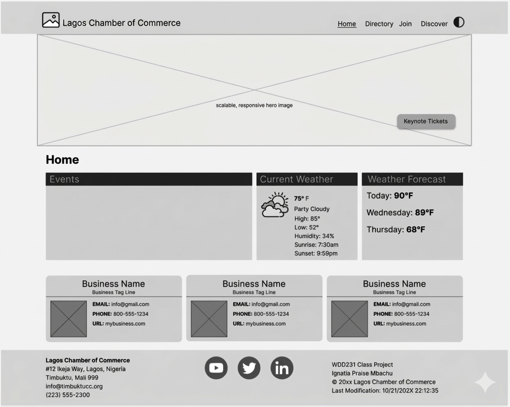
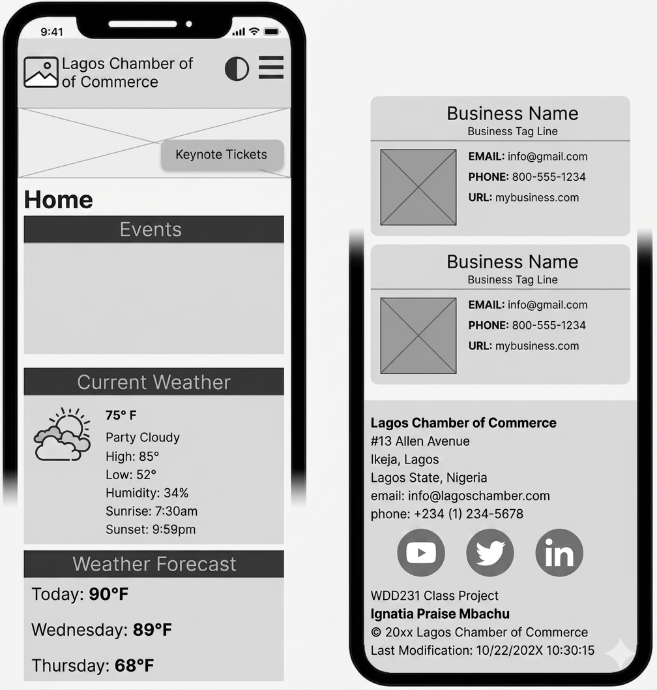

Site Name
Lagos Chamber of Commerce
Site Purpose
This website will serve as a resource hub for businesses in Lagos, Nigeria. The site will provide information on local events, networking opportunities, business directories, training programs, and economic development initiatives. It aims to support local businesses, encourage investment opportunities, and strengthen the business community in Lagos.
Target Market
Entrepreneurs, small business owners, corporate organizations, investors, tourists, and residents in Lagos and surrounding areas.
Site Goals
- Promote local businesses and economic growth in Lagos.
- Provide networking opportunities for entrepreneurs and companies.
- Increase chamber membership and community engagement.
- Share business resources, training, and upcoming events.
- Improve awareness of Lagos as a thriving business destination.
User Personas
Small Business Owner - Amaka
Amaka is a 32-year-old fashion entrepreneur in Lagos. She is looking for networking opportunities, business support, and marketing resources to grow her brand.
Corporate Executive - Tunde
Tunde is a 45-year-old executive working for a large technology company. He is interested in partnership opportunities, investment information, and business events in Lagos.
New Resident - David
David recently moved to Lagos and wants to learn more about businesses, community events, and services available in the city.
Scenarios
- A local entrepreneur wants to join the chamber and visits the website to learn about membership benefits and registration.
- A resident is searching for upcoming business workshops and events happening in Lagos.
- An investor wants to explore Lagos business opportunities and learn about the local economy before relocating.
SEO Plan
- Use keywords related to Lagos businesses and commerce.
- Optimize page descriptions and headings for search engines.
- Connect the website to Google Business Profile.
- Encourage backlinks from member businesses.
- Integrate Google Analytics for visitor tracking.
Design Brief
Primary Color
#005F73Secondary Color
#EE9B00Background Color
#F8F9FAText Color
#222222Typography
Heading Font: Play
Body Font: Open Sans
Site Map
Wireframes
Desktop View

Mobile View
